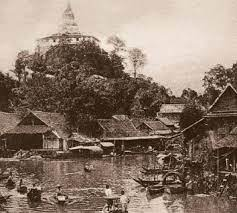

Starting from the late 1700s, Bangkok emerged as Thailand's largest and most significant urban center. Following the devastating 1767 invasion by the Burmese, which resulted in the destruction of Ayutthaya, the historical capital of Siam (now Thailand), the decision was made to relocate the capital downstream along the Chao Phraya River to Thon Buri or Old Bangkok, situated on the river's western bank. In 1782, King Rama I (1737–1809; ruled 1782–1809) took the throne and opted to transfer the capital to a village on the opposite side of the river.
This strategic move was aimed at creating a natural barrier using the expansive Chao Phraya River to shield the capital from potential Burmese invasions, which were frequent at that time. The village across the river predominantly consisted of Chinese traders and was called Bangkok, a name that translates to "Village of Wild Plums."

Although European architectural styles left their mark on the city's architecture, it's intriguing to note that both Bangkok and the entirety of Siam managed to avoid colonization by European nations. This can be attributed to their strong centralized governance, which provided a level of security. Additionally, the competing interests of major European powers like France and Britain played a role.
These powers viewed Siam as a politically neutral intermediary connecting Indochina (controlled by France) and India as well as Burma (controlled by Britain). However, it's worth mentioning that despite maintaining their sovereignty, there were territorial disputes with the French that led to Siam ceding certain areas to the Western power.
